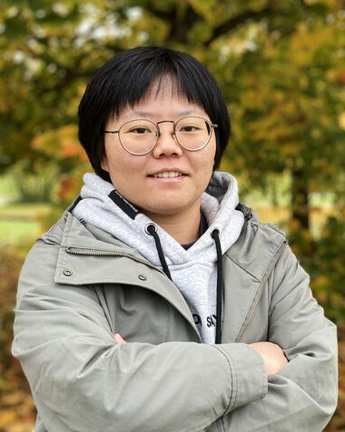

Beyond Generalization: The Challenge of Continual Adaptation
Speaker: Prof. Qi Chen
Time: 16:00 (GMT), November 18, 2026

Abstract
Modern machine learning has achieved remarkable success, yet real-world environments are rarely static. As data distributions evolve and new tasks emerge, learning systems must continually adapt while preserving previously acquired knowledge and capabilities. In this talk, I will discuss some of the fundamental challenges of generalization and adaptation in machine learning, drawing on our recent research from both theoretical and algorithmic perspectives. I will highlight the opportunities and challenges of leveraging prior knowledge in changing environments, and discuss promising directions towards building more reliable and adaptive learning systems.
Sponsors